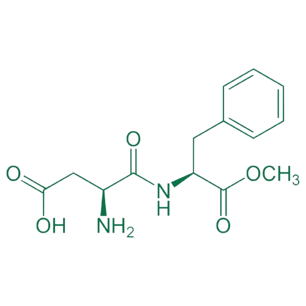

모아보기
기업 소개
고객 지원
수크랄로스
C₁₂H₁₉Cl₃O₈
수크랄로스는 설탕의 일부 성분이 염소로 바뀐 인공 감미료예요. 설탕보다 600배나 더 강한 단맛을 내고, 칼로리는 전혀 없답니다. 그래서 다이어트할 때나 건강을 생각하는 분들에게 좋죠. 수크랄로스는 열이나 산성 환경에도 잘 견디기 때문에 식품 제조에 많이 사용되며, 뒷맛이 거의 없고 부작용도 적어서 안전하게 쓸 수 있어요. 주로 견과류, 음료, 가공유, 영양 보충식품 같은 곳에 쓰이고, 충치나 비만의 위험을 줄여줄 수 있어요. 심혈관 질환 예방에도 도움이 될 수 있답니다. 재미있는 사실은, 수크랄로스가 처음에는 살충제에 들어갈 화학 성분으로 개발되었다는 거예요. 그런데 1976년에 인도의 화학자 Shashikant Phadnis가 "test"라는 말을 "taste"로 잘못 듣고 수크랄로스를 맛보게 되었어요. 그 결과로 강한 단맛을 발견하고 인공 감미료로 사용하게 된 거랍니다! 정말 흥미로운 이야기죠?

돌아가기